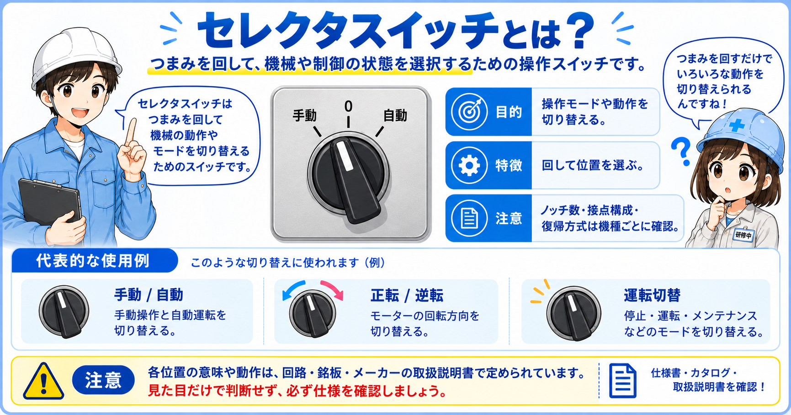
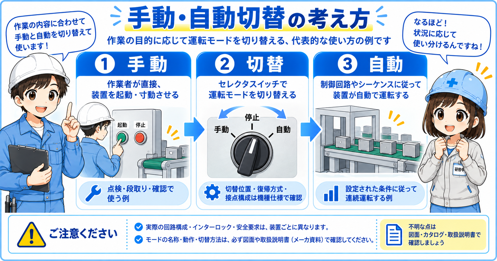
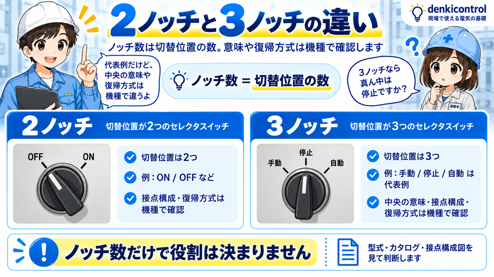

向いている人
- 制御盤のセレクタスイッチの役割を知りたい人
- 手動・自動の切替がどこにつながるか知りたい人
- 2ノッチ・3ノッチの違いを現場目線で整理したい人
セレクタスイッチは、つまみを回して位置を切り替える操作スイッチです。 制御盤では、手動・自動、ON・OFF、運転・停止、正転・逆転など、設備のモードや状態を切り替える場面で使われます。
押しボタンは「押している間だけ信号を入れる」使い方が多いのに対して、セレクタスイッチは選んだ位置を保持する使い方が多いです。 そのため、今どのモードが選ばれているかを見た目で確認しやすいのが特徴です。
手動・自動の切替では、作業者がどちらのモードで設備を動かすかを選びます。 選んだ位置が残るため、試運転・調整・通常運転の切替でよく使われます。

先輩セレクタスイッチは、押すというより「回して選ぶ」スイッチだね。

新人手動・自動って書いてあるつまみのことですね。試運転のときによく見ます。

先輩そう。今どのモードが選ばれているかで、設備の動き方や確認する場所が変わるよ。
セレクタスイッチとは、つまみを回して接点の状態を切り替える操作スイッチです。 制御盤や操作盤の表面に取り付けられ、作業者が運転モードや操作条件を選ぶために使います。
代表的な使い方は、手動・自動の切替、ON・OFFの切替、運転・停止の選択などです。 裏側には押しボタンスイッチと同じように接点ブロックや端子があり、選んだ位置によって接点が切り替わります。

試運転や調整では手動、通常運転では自動というように、設備の動かし方を切り替えます。
電源、補助機能、照明、ブザーなど、入・切を選ぶ場面で使われます。
運転状態を選択したり、設備の操作状態を保持したりする用途で使われます。
通常、調整、メンテナンスなど、設備の動作モードを分けたいときに使います。
盤面では「手動」「自動」と見えていても、裏側では複数の接点が同時に切り替わっていることがあります。 図面と実物を合わせて、どの位置でどの接点がONになるかを見るのが大事です。
セレクタスイッチでよく使うのが、手動・自動の切替です。 手動では作業者が押しボタンなどを操作して機械を動かし、自動ではセンサーやPLC条件に従って機械が動きます。

| モード | 動かし方 | 現場での使い方 | 注意点 |
|---|---|---|---|
| 手動 | 押しボタンなどを操作して動かす | 試運転、調整、単動確認、復旧作業 | 作業者が周囲を確認しながら操作する |
| 自動 | センサーやPLC条件で自動的に動く | 通常運転、連続運転、省力化運転 | 条件が成立すると動くため、不意の動作に注意する |
手動では個別操作、自動ではシーケンス動作になることがあります。 そのため、切替位置を確認せずに作業すると、想定外の動作につながる場合があります。
セレクタスイッチでは、「2ノッチ」「3ノッチ」という言い方をすることがあります。 ノッチとは、切り替えられる位置の数のことです。

| 種類 | 切替位置 | 代表的な表記 | 使い方の例 |
|---|---|---|---|
| 2ノッチ | 2つ | ON / OFF、入 / 切、手動 / 自動 | シンプルな入切、2モード切替 |
| 3ノッチ | 3つ | 手動 / 停止 / 自動、正転 / 停止 / 逆転 | 停止位置を含むモード選択 |
セレクタスイッチは、つまみから手を離しても選択した位置が残る保持タイプがよく使われます。 電源を切って再投入したときも、同じ位置のままになっていることがあるため、作業前の確認が大切です。
制御盤でセレクタスイッチを見るときは、つまみの位置、銘板、接点構成、配線先を順番に確認します。 特に手動・自動の切替では、選ばれているモードによって設備の動作条件が変わることがあります。
「手動」「停止」「自動」「ON」「OFF」など、各位置の意味を確認します。
現在どの位置が選ばれているかを確認します。表示ラインや白い印を見ます。
どの位置でどの接点がON/OFFするのかを図面や端子で確認します。
PLC入力に入っているのか、リレー回路に入っているのかで確認方法が変わります。
セレクタスイッチの位置が自動のままだと、条件が成立した瞬間に設備が動く場合があります。 試運転や復旧作業では、選択位置を確認してから作業することが大事です。
セレクタスイッチまわりのトラブルでは、「手動で動かない」「自動に切り替わらない」「モードが反映されない」「表示と動作が合わない」といった症状が出ます。 そのときは、つまみ位置、接点、端子、配線先を分けて確認します。
実際に選ばれている位置と、盤面の表示が合っているか確認します。
各位置で接点が想定どおりON/OFFするかを確認します。
交換時に接点構成を間違えると、手動・自動の信号が逆になることがあります。
端子のゆるみや配線抜けがあると、選択しても信号が入力先に届きません。
PLC入力でモードを見ている場合は、入力ランプやモニタ状態を確認します。
銘板の表記と実際の配線が違うと、見た目と動作が合わなくなります。

新人手動にしているのに動かないときは、スイッチが悪いと考えればいいですか？
先輩いきなり交換ではなく、位置、接点、端子、入力先の順番で見るのがいいね。スイッチ本体以外が原因のこともあるよ。
セレクタスイッチは見た目が似ていても、ノッチ数、接点構成、保持方式、取付穴サイズ、つまみの形が違うことがあります。 交換するときは、見た目だけで判断せず、型式や図面を確認します。
| 確認項目 | 見る理由 |
|---|---|
| ノッチ数 | 2ノッチなのか3ノッチなのかで、選べる位置の数が変わります。 |
| 接点構成 | 各位置でどの接点がONするかが違うため、回路の動きに影響します。 |
| 保持方式 | 保持タイプ、復帰タイプなどがあり、手を離した後の状態が変わります。 |
| 取付穴サイズ | φ22、φ25、φ30など、盤面の穴径に合うものを選ぶ必要があります。 |
| 銘板・表示 | 手動・自動・停止など、操作ミスを防ぐために表示と動作を合わせます。 |
セレクタスイッチの仕様を変えると、設備の起動条件や停止条件が変わることがあります。 安全や自動運転に関わる部分は、図面・仕様・実際の動作を確認してから対応します。
セレクタスイッチは、制御盤や操作盤で手動・自動、ON・OFF、運転・停止などを切り替えるための操作スイッチです。 押しボタンのように一瞬だけ操作する部品ではなく、選んだ位置を保持して使う場面が多いです。
2ノッチは切替位置が2つ、3ノッチは切替位置が3つです。 手動・停止・自動のように停止位置を含めたい場合は、3ノッチのセレクタスイッチが使われることがあります。
現場で見るときは、つまみの位置、銘板、裏側の接点ブロック、配線先をセットで確認します。 特に手動・自動の切替は設備の動き方に関わるため、作業前に現在の位置を確認することが大切です。